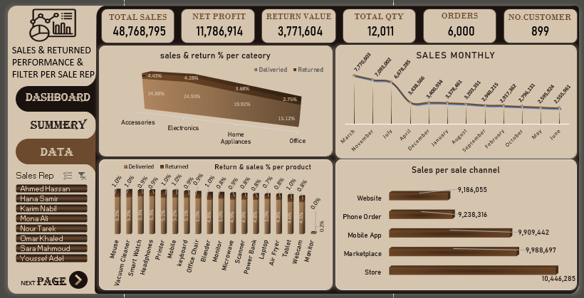

VIEW PROJECT ↗
01 / FEATURED EXCEL CASE STUDY
Advanced Sales Data Cleaning & Analysis
↗Turned 6,080 source records into 6,000 prepared records, removed duplicates, handled data-quality issues, reconciled sales and profit totals, and built a two-page Excel dashboard.
ExcelData CleaningData ValidationDashboard
View full case study ↗
 VIEW PROJECT ↗
VIEW PROJECT ↗
02 / EXCEL CASE STUDY
Sales & Customer Performance
↗Explore sales performance across 3,457 orders, customer records, product contribution, markets, and delivery operations, with an interactive preview and downloadable sample datasets.
ExcelData PreparationPivot TablesDashboard
View full case study ↗